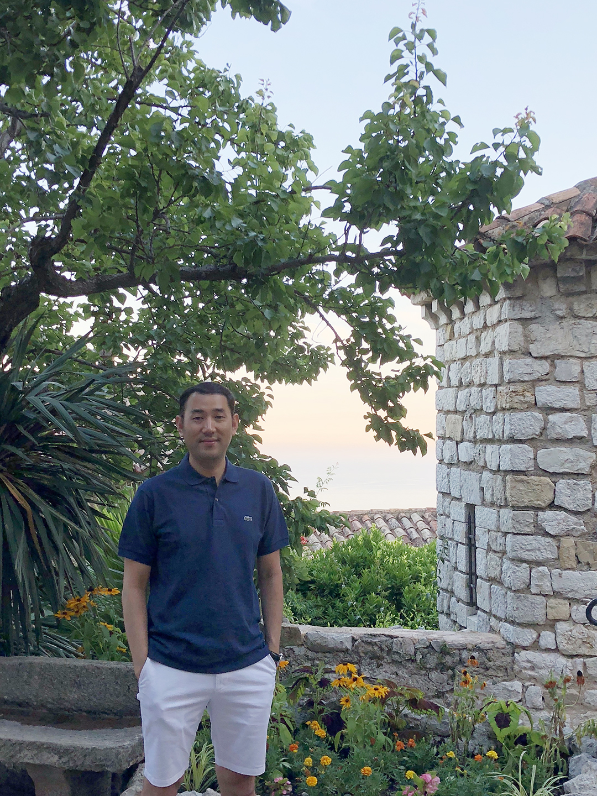

|
Gordon Euhyun Moon
Associate Professor
Department of Computer Science and Engineering
College of Computing
Sogang University
Office: Adam Schall Hall, Room 813
Email: ehmoon (at) sogang.ac.kr
Google Scholar: https://scholar.google.com/citations?user=SmvStlcAAAAJ&hl=ko
I am an Associate Professor in the department of Computer Science and Engineering and the director of the Machine Learning Systems Lab at Sogang University in South Korea. My research interests involve connecting the areas of Machine Learning and High Performance Computing—more specifically, parallelization of Deep Neural Networks. I am also interested in applications in recommender systems, healthcare, activity recognition, and general AI.
Before joining Sogang, I received my Ph.D. from The Ohio State University, did a postdoctoral researcher in the Center for Computing Research at Sandia National Laboratories, and was an Assistant Professor in the department of Software at Korea Aerospace University.
I have interest in advising undergraduate and graduate students. Please contact me if you are passionate about research related to ML and HPC.
|

|